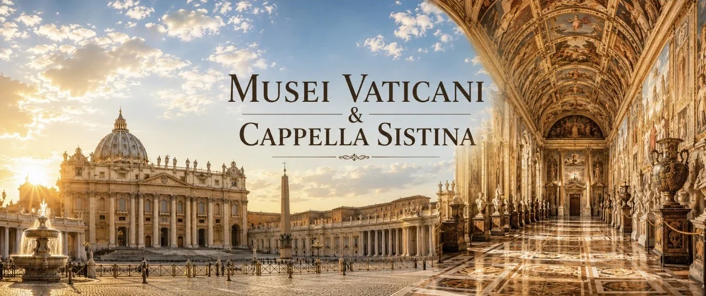
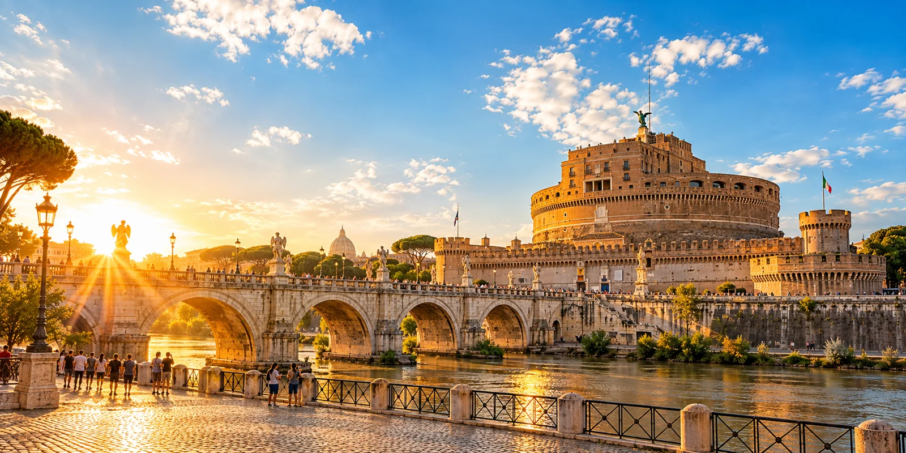
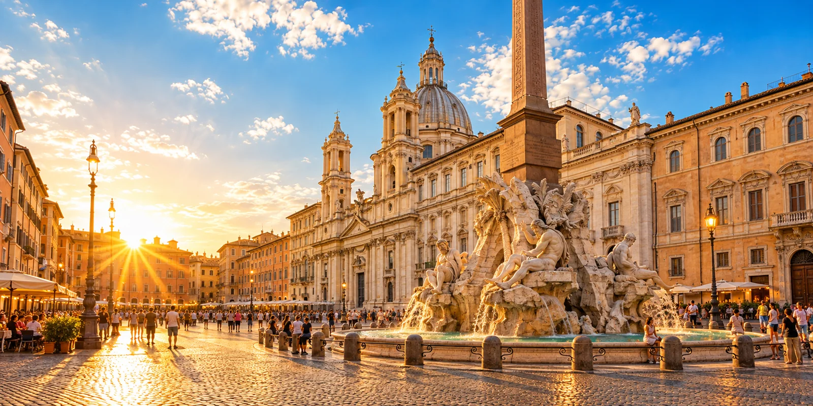

San Pietro
6 min a piedi

Casa vacanze a Roma · zona Vaticano
Parcheggia l’auto ed entra in Vaticano a piedi
San Pietro · Musei Vaticani · Centro storico
Prenota direttamente★ 4.95 su Airbnb · 9.8 su Booking.com
Spazi autentici.
Soggiorni indimenticabili.
Scopri
Cerchi una location per un servizio fotografico?
Contattaci per un’offerta dedicata.
Esplora
Tempi a piedi dall’appartamento
Le principali mete si raggiungono a piedi: anche il Pantheon è a soli 20 minuti.
6 min a piedi


12 min a piedi

15 min a piedi
Dormire all’ombra del Cupolone
Roma & Vaticano